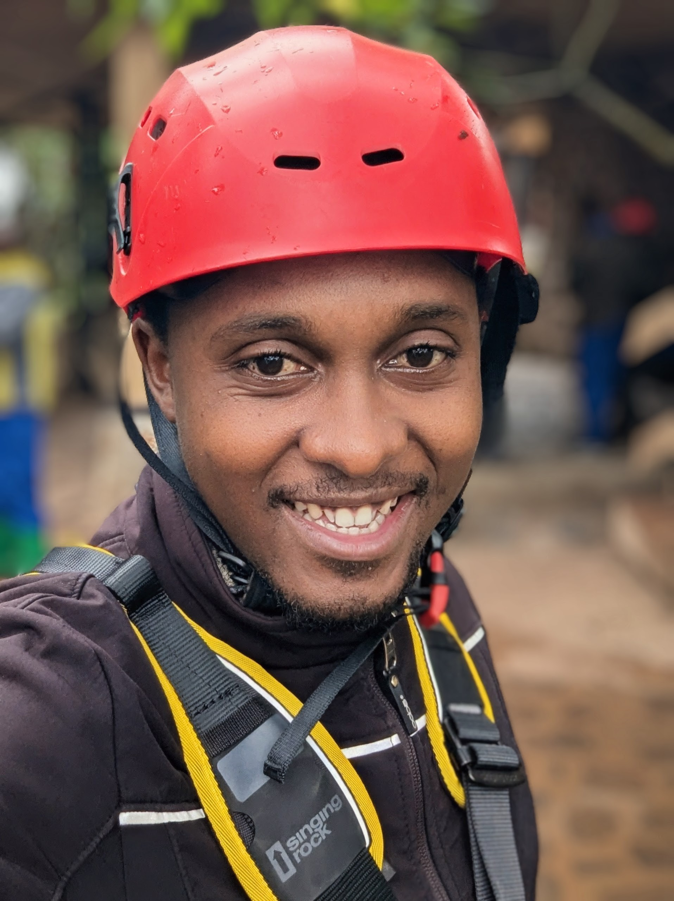

Behind the Lens
A glimpse into the moments that shape how I see the world.


A journey shaped by light, landscapes, and the quiet stories of East Africa.

Hi, I’m Mommo — a travel photographer and storyteller drawn to the mountains, lakes, and wildlife of East Africa.
My journey began with simple walks and borrowed cameras. Over time, those quiet moments grew into a deep love for the landscapes and people that shape Rwanda and Uganda.
Today, Mommo Travels is my way of sharing that world — the misty mornings, the golden evenings, the wildlife encounters, and the stories that live between them.
I believe in slow travel, honest storytelling, and photography that respects the land and the life it holds.
I linger in places long enough to understand their rhythm — the way light moves, the way people live, the way landscapes breathe.
Every animal I photograph is a life, not a prop. My work is guided by patience, distance, and deep respect.
I’m less interested in perfect postcards and more drawn to the quiet, honest moments that reveal a place’s soul.
A glimpse into the moments that shape how I see the world.
Whether you’re here for the photographs or the stories, I’m glad you’re here.
Get in Touch